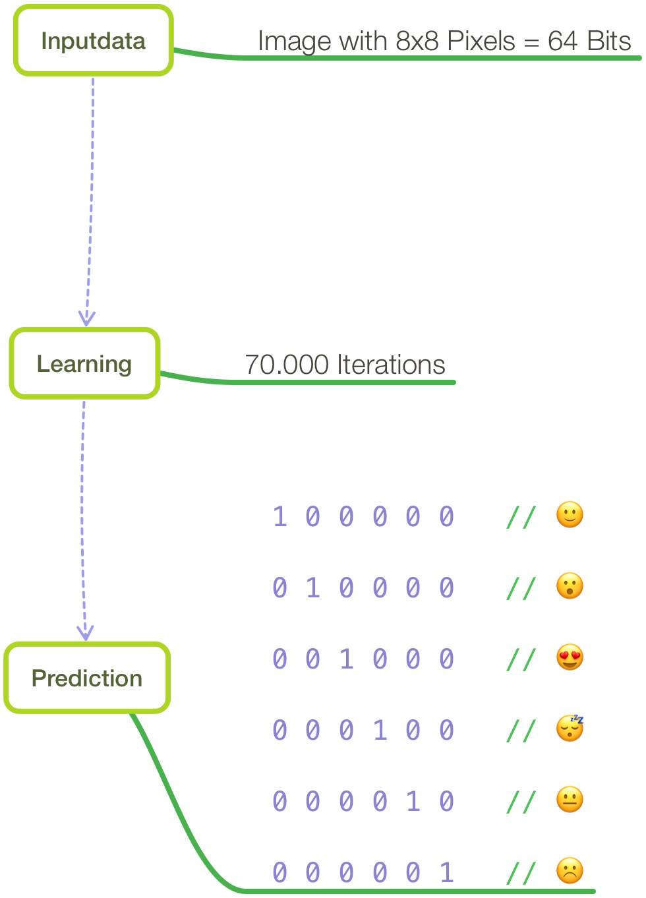
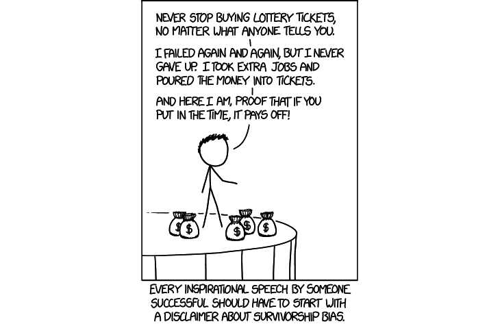

Hello World
CodeTengu Weekly 碼天狗週刊
CodeTengu Weekly 會在 GMT+8 時區的每個禮拜一 AM 10:00 出刊，每期會由三位不同的 curator 負責當期的內容，每個 curator 有各自擅長的領域，如果你在這一期沒有看到自已感興趣的東西，可能下一期就會有了。你也可以瀏覽一下前幾期的內容。
目前的 curator 陣容：
- @vinta - I failed the Turing Test - 科幻迷，最近在讀 Singularity Sky
- @saiday - Imnotyourson - 最近在看禪與摩托車維修的藝術
- @tzangms - Oceanic / 人生海海 - 衝動型購物
- @fukuball - ImFukuball - 徵會寫 HTML & CSS 的網頁設計師
- @mingderwang - Ethereum enthusiast
- @kako0507 - 熱愛嘗試新事物的前端工程師
- @chiahsien
- @hiroshiyui
- @uranusjr - Smaller Things - PyCon Taiwan 2017 門票熱賣中
- @kkdai - 態度萬歲 - 喜歡 Golang 的略懂工程師，最近在學機器學習 (疑?)
- @yhsiang
你也可以關注我們的 Facebook、Twitter、GitHub（Open Source 專案）或微博，有很多 Weekly 看不到的內容。有任何建議或疑問也歡迎來 Gitter 聊聊。
 @saiday
@saiday
onevcat/FengNiao: A command line tool for cleaning unused resources in Xcode.
王巍是一個知名的 iOS 開發者，這是他最新 Open Source 的 project，主要是清掉 Xcode 專案中已經不再被使用的資源檔。
但我想介紹的是這個 project 開發的過程，這個 project 開發的過程透過直播 live coding，在直播平台上付費 10 人民幣可以收看直播或回播，我覺得這個模式很不錯，看資深工程師的 live coding 可以學到很多東西，而願意分享的人也得到實質的回饋，是這個環境中正向的循環。
直播：现场编程 - 用 Swift 创建命令行工具 fengniao-cli Part 3 (這個直播平台竟然只能用微信登入也只有手機版網頁，相當秋)
Swift Enums Are "sum" Types. That Makes Them Very Interesting
Swift Enum 其實就是一個 代數資料型別 (Algebraic Data Types, ADTs)，我們可以設計 Enum 為 ADTs 中的 sum, product 或 recursion 型別。Enum 對 ADTs 的支持讓我們可以在 Swift 的資料結構設計上更靈活，像是經常會跟 ADTs一起被提起的 Pattern Matching 就是一個非常好的設計模式。
雖然說這篇文章只是在介紹 ADTs 中的 product, sum type 的差別，但因為舉了很多現實世界的小例子來輔助，還是值得一看。
碰巧之前在翻 Swift 3 Functional Programming 這本書有看到對 Swift Enum ADTs 的介紹，還算是好懂。

Luubra/EmojiIntelligence: Neural Network built in Apple Playground using Swift
用 Swift 來實作神經網路學習是比較少見的，這個 project 是從使用者畫畫的手勢推定出對應的 emoji。
這樣的概念好像是 mobile client 上還蠻實際的應用？
阿里巴巴 Java 开发手册评述
阿里巴巴發佈了《阿里巴巴 Java 开发手册（正式版）》 社群的評價滿高的，分別對程式碼風格、錯誤處理、資料庫、架構跟安全性做出規範跟對應說明，值得一讀。
其實，在工作的合作上，訂立共同的規範或技術選擇都要給大家一個理由，這樣大家才能知道這樣做要解決的核心問題是什麼，或許能提供更好的想法。對規範有完整的說明，這個規範就是活的，可以針對問題繼續演進，沒有了說明，那就死掉了，最後又變成形式主義了。
10 Books Android developers should read – Fragmented
這集 Fragmented 在討論 Android 開發者應該要看的書單。
列出的十本書裡面沒有專門寫 Android 的書，不過想想這也正常啦。
程式語言、架構設計、設計模式、測試，這些是軟體開發的內功，framework、SDK 這些是外功，長期來說內功的投資報酬率是高很多的，畢竟外功的邊際效應相當地高啊。
 @mingderwang
@mingderwang
A Web3-redux-react-starter-kit Walkthrough
連續介紹好幾次智能合約的撰寫，最近發現越來越多手機的 apps 例如 token 或網頁已經跟智能合約串起來了。這篇文章介紹如何利用 truffle framework，將智能合約與 react 和 redux 的程式串連起來。其中 web3.js 扮演了非常重要的角色。它讓你的智能合約程式 (Dapp) 能與 Ethereum 網路溝通，因為智能合約只能在 Ethereum 上的 EVM 才能夠執行。
Tools as a catalyst for culture change
Bill Higgins 分享了他過去 2 年半在 IBM 推動 continuous delivery (CD) 的經驗和故事。還有挑對好工具，對激勵公司文化的改變是有幫助的。配合工具的使用，教導大家做一些實務演練，慢慢就能影響公司文化。當然，另一個成功的原因，還是 CEO 有眼光，雇用了 Jeff Smith 當 IBM CIO，由上而下的推廣 agile 且由下而上的實作 devOps。在 Build A Next Generation Agile Culture YouTube 裡，你能看出在這麼大的公司推動有多困難，但他們還是做到了。
2017 Software Development Salary Survey
2017 年軟體開發人員薪資調查出爐了。薪水最高的地方在美國加州，年薪中間值為 $139,000 美金。以區域來比較，美國加州 +$113,507，亞洲只有 +$27,094。其中也有問到未來最想學的電腦語言，前三名是 Go，Python，以及 Scala。其他數據，就請大家自己下載來看看了。
 @uranusjr
@uranusjr
Replacing Disqus with GitHub Comments
作者決定把 Disqus 從他的（用 static page generator 做的）blog 裡拿掉，改用 GitHub issue comments 取代，然後寫 JavaScript 接 GitHub API 把 comments 動態顯示到網頁上。
幾個重點：
- Disqus 的廣告 tracking 實在做得太誇張，不只是隱私原則問題，根本到了會影響 usability 的程度。
- GitHub 的 rich text 支援（Markdown）比 Disqus 更好，又支援程式碼格式，在技術上也有站得住腳的理由。
- 或許也可以用同樣的 API 直接在 blog page 上發 comment？值得研究。
- 可能要注意 XSS 攻擊。
我都心動了呢。該重寫 blog 平台了。
‘Abusing’ the C switch statement – beauty is in the eye of the beholder
C 的炫技。一切盡在不言中。
如果你看完了還是不懂（強烈建議先看完），關鍵有兩個：
How (Not?) to Use Python's List Comprehensions
Python 的炫技。這比起上面那篇好像就滿容易看懂的，畢竟你要用 Python 寫出別人看不懂的程式也實在不容易。但維護起來還是 jackie-chan.jpg，所以拜託不要在工作上用不然我要跟你絕交。不過當然，寫 Lisp 的話就沒關係，因為 Lisp 94 狂。
{kind=link}
Diff-HTML: Tools for generating diff output in HTML.
自肥時間。這個 Python 小工具可以讓你輸入兩個文本，用 HTML format 輸出它們的行 diff 與行內差異。我同時做了一個小 demo 可以玩玩看。
這個工具主要是基於 Python 內建的 difflib。如果要我舉出最不為人所知的優秀 Python 標準庫，difflib 肯定榜上有名。它是基於 Ratcliff-Obershelp 演算法的優化，完全以 Python 實作。如果你對這類演算法有興趣，它裡面的 SequenceMatcher 是個非常棒的參考資料。我其實只是用它來當 diff 引擎，再輸出合適的 HTML 格式。
這個 library 的原始靈感是來自 PyCon Taiwan 2017 的審稿需求。今年我們的審稿新增了一個階段，是可以讓投稿人先根據評審的建議修改稿件，然後評審再根據更新後的稿件下最後決定。為了避免評審要從頭看一次投稿，就做了這個 diff 功能。審稿到昨天結束了，這個功能真的超棒的啊！（自己說）能先看一次評審回饋讓整體投稿品質上升好多，真心不騙。現在買票還來得及。

Darius Kazemi, Tiny Subversions - XOXO Festival (2014)
前幾天 xkcd 的最新一回描述了常見的「正能量」陷阱：生存者偏誤。畢業季慢慢接近，網路上也又開始分享那些有名的畢業演說。好的演說實在是振奮人心啊。只要努力、該堅持時持之以恆、該放棄時果斷放棄，即使一開始旁人都笑你傻，但撐到最後你就會成功。像我一樣！多麽激勵。只可惜事情沒那麼簡單。我做了這些事所以成功，不代表做這些事情就能成功。因為失敗的人你看不到啊。
標題連結裡的演講來自 XOXO 2014，是我覺得把這個主題很好呈現的一次演說。笑話解釋了就不好笑，希望大家能理解這個黑色幽默。也希望你下次看到成功人士傳記之類的勵志作品和心靈雞湯時，能先退一步想起生存者偏誤。
另外參考：
- Explain xkcd 的解釋
- 維基百科的認知偏誤列表